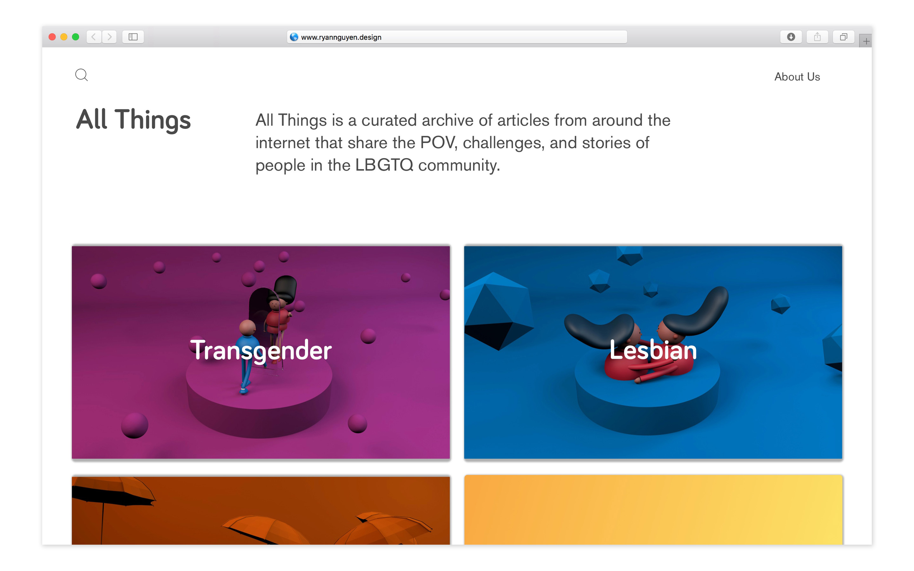
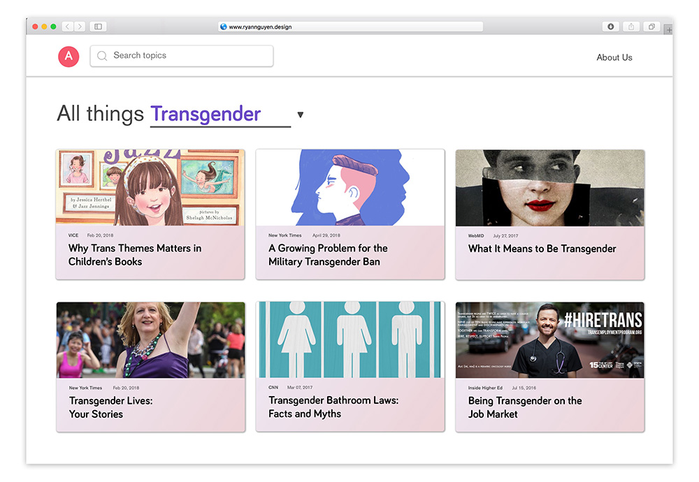
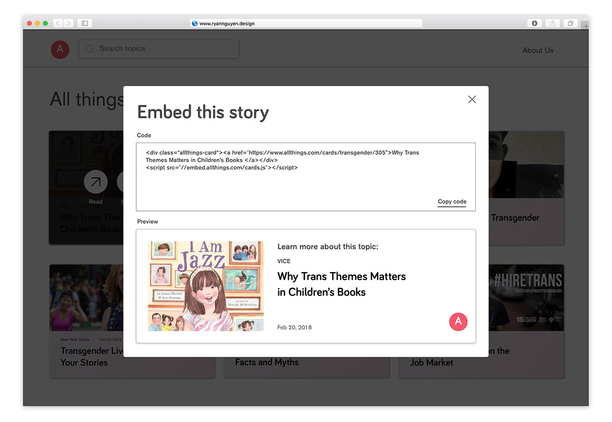
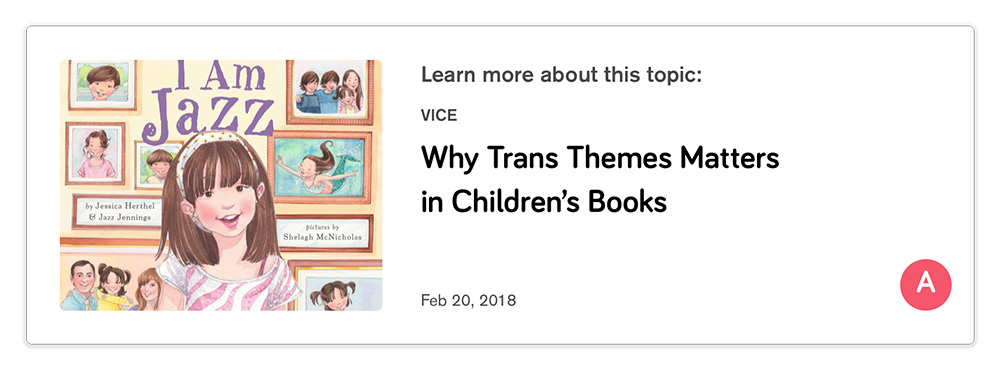
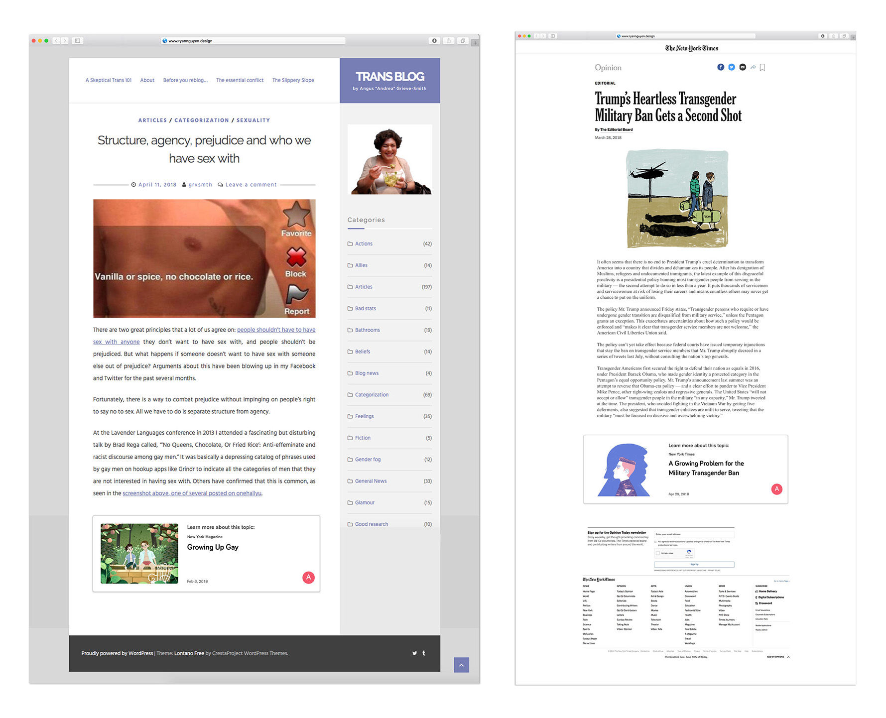

Building Bridges
In the future, we won't just report news, we will build bridges. Not only will there be more news coverage and policy about and for the LGBTQ community; but there will be more storytelling that help older/conservative/traditional groups better understand, and build sympathy, with that community and its values.
Problem
A Rise In LGBTQ Representation In The Media
Our culture is evolving and progressing and the media is starting to become more open to publishing news regarding the LGBTQ community.
However, not all groups in our country are progressing as quickly. There is progressive news and policy, but there isn't always understanding, especially from older, conservative, traditional generations who may still not sympathize with these underrepresented communities.
The Problem
There has been a lack of representation for the LGBTQ community in the media in many countries, especially developing countries. In the last few of years, as equality transitions from being a privilege to basic human rights, the media is more open to include and promote news regarding the LGBTQ community. There are many adults, especially in developing countries, who have never had exposure to these topics. The question is, how can we educate them?
The Prediction
In the future, we won't just report news, we will build bridges. Not only will there be more news coverage and policy about and for the LGBTQ community. There will be more storytelling that help older/conservative/traditional groups better understand, and build sympathy with, that community and its values.
Since the media and news are starting to become more open to including news regarding the LGBTQ community, older generations would be open to understand these concepts. Let's educate older generations on topics they have limited exposures to.
Solution
All Things is a curated archive of articles from around the internet that share the POV, challenges, and stories of people in the LBGTQ community. Visitors would be journalists who write news articles that touch on these issues and want to expand on these sensitive topics in their own work. They can discover related articles in All Things, generate an embed code for that article, and embed it on their own published pieces.
The homepage introduces the visitor to the site, and lets them choose a specific topic that they want to read articles about.
When the visitor chooses a topic, they see a variety of articles about that topic.
When the visitor hovers over an article, they can choose to read it, share it, or embed it.
 The visitor clicks embed and views an embed modal that lets them copy the embed code.
A journalist writing on a related topic can embed this article in their own published piece.
For example: A news article on how Trump denying transgenders the right to be in the military will have an embeded article at the bottom on what it's like to be transgender.
Cover Art
Cover art designed and animated using Cinema4D.